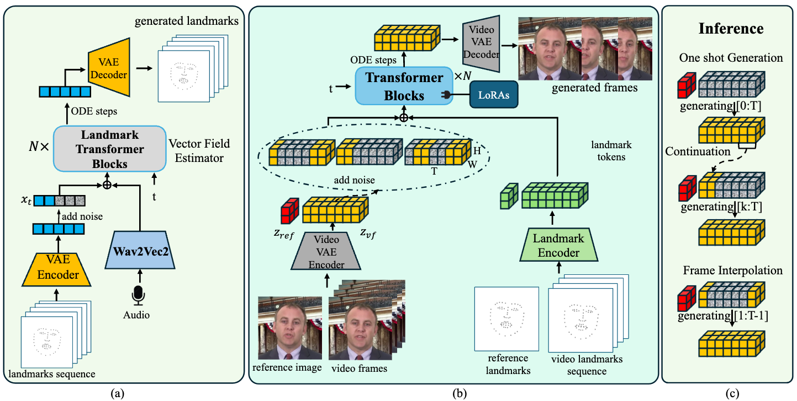

DiTalker: Fast and Expressive Audio-Driven Talking Face Generation with Dual Diffusion Transformers
Anonymous Authors*,Anonymous Institute TL;DR: With recent advances in diffusion models, audio-driven talking face generation has witnessed remarkable progress in producing expressive and lifelike results. However, existing methods typically inherit fundamental techniques from pretrained text-to-image models, which results in redundant structures and noticeable visual artifacts. Besides, the high computation costs and slow inference speed of existing large-scale diffusion models impede their real-world applications. In this paper, we propose DiTalker, a fast and expressive diffusion transformer (DiT)-based talking face model to handle the above issues. Specifically, (1) we redesign an efficient network structure tailored for video generation, including a video Variational Autoencoder (VAE) and a 3D full attention transformer; we also adopt a context mask-based flow matching strategy to achieve better sample quality with fewer denoising steps; (2) we propose a LoRA-based self-distillation pipeline to support plug-and-play one-step denoising inference, which first speeds up the denoising process to 2$\times$ real-time; (3) we also propose an audio-to-landmark DiT for expressive audio-driven facial landmark generation. Experiments show that our DiTalker could generate expressive and lifelike talking face videos at a low computation cost, outperforming existing state-of-the-art methods regarding video quality and inference speed. Further visualization can be found at: https://ditalker.github.io

Different Style Video Generation by DiTalker
Different Style Video Generation by DiTalker
Left-to-Right: Reference Image | GT | DiTalker-1-step | EMO(10 step) | EchoMimic(10 step) | SadTalker
Audio2Landmark DiT Ablation Study
Left-to-Right: Reference Image | Ours | Ours w/o VAE | Ours prdict 3DMM parameters
Frame Interpolation By DiTalker
Left-to-Right: First Image | Last Image | Interpolation Results

Landmark-to-Video Ablation study
Left-to-Right: Reference Image | DiTalker | w/o Pretrained Model | w/ Motion Frames